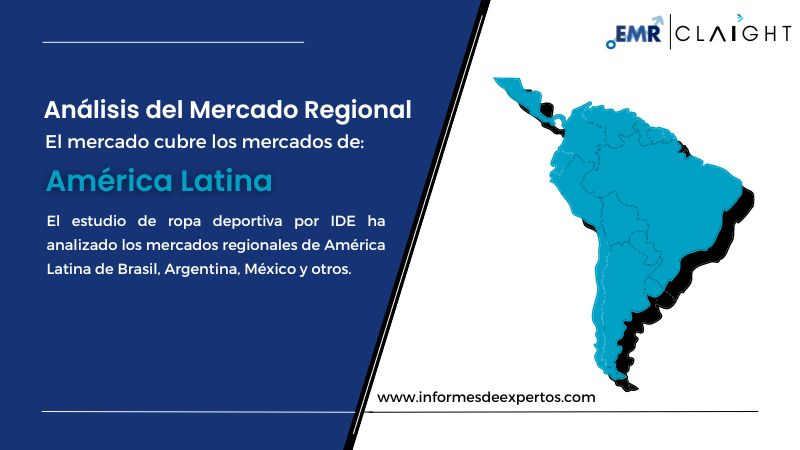

El mercado, en función del tipo de producto, puede clasificarse para grandes rasgos en:
Los usuarios finales del sector se clasifican en:
Los canales de distribución del mercado son los siguientes
El segmento del comercio electrónico es líder entre los demás segmentos del canal de distribución en América Latina debido al elevado número de usuarios activos de Internet y al factor de facilidad de acceso de las plataformas de compra en línea.
El estudio de ropa deportiva por IDE ha analizado los mercados regionales de América Latina de Brasil, Argentina, México y otros.
